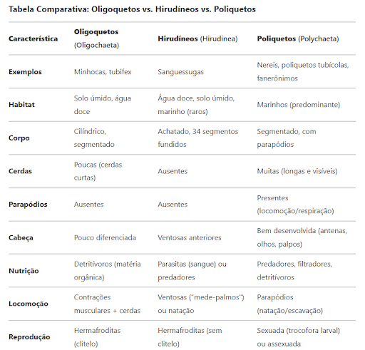

O que são Anelídeos?
Definição: Anelídeos são animais invertebrados com o corpo segmentado em anéis, pertencentes ao filo Annelida.
Exemplos: Minhocas, sanguessugas e poliquetas são alguns representantes desse grupo.
Importância: Eles têm um papel essencial na natureza, como aeração do solo e reciclagem de matéria orgânica.

Anatomia dos Anelídeos
Segmentação: Corpo dividido em anéis (metameria), o que ajuda na locomoção e permite funções diferentes em cada segmento.
Circulação: Sistema fechado, com vasos dorsais e ventrais. Algumas espécies possuem "corações" laterais pulsantes.
Digestão: Boca, faringe, papo, moela, intestino e ânus. A digestão é eficiente e contribui para a reciclagem da matéria orgânica.

Funções Vitais
Nefrídios: Estruturas excretoras que eliminam resíduos e controlam o equilíbrio hídrico.
Células sanguíneas: Hemácias transportam oxigênio com auxílio da hemoglobina. Importante para a respiração celular.
Podcast: O especialista discutirá o papel das células especializadas, como os nefrídios, responsáveis pela excreção e o transporte de oxigênio.
Alimentação
Minhocas: Comem matéria orgânica em decomposição e melhoram a fertilidade do solo.
Poliquetas: Marinhos, usam apêndices para capturar plâncton ou pequenos organismos.
Sanguessugas: Se alimentam de sangue de outros animais com uma boca adaptada.
Classes de Anelídeos
- Oligoquetos: Como minhocas. Vivem na terra, ajudam no solo e têm poucos pelos (cetas).
- Hirudíneos: Sanguessugas. Corpo achatado, sem cerdas e com ventosas.
- Poliquetos: Vivem no mar, com muitos apêndices e comportamentos variados.
Podcast: O especialista falará sobre as principais classes de anelídeos e suas características específicas.
Tabela comparativa das Classes dos Anelídeos
Reprodução
Assexuada: Fragmentação ou brotamento em algumas espécies, formando clones.
Sexuada: Envolve espermatozoides e óvulos. Fecundação pode ser externa ou interna. Algumas espécies são hermafroditas.

Ciclo de Vida
Direto: Ovos geram jovens semelhantes aos adultos. Crescimento por adição de segmentos.
Proteção: Algumas espécies criam cápsulas ou gel para proteger ovos.
Adaptação: Ciclo pode variar com o ambiente — como temperatura e disponibilidade de alimento.
Papel Ecológico
- Solo: Minhocas aumentam a oxigenação, drenagem e fertilidade.
- Reciclagem: Decompõem matéria orgânica e liberam nutrientes.
- Alimento: Base alimentar para aves, peixes e répteis.
- Indicadores: Mostram a qualidade do solo e da água.
- Uso médico: Sanguessugas são usadas em tratamentos que envolvem circulação.
Importância na Biodiversidade
Anelídeos sustentam cadeias alimentares, equilibram ecossistemas e ajudam a avaliar a saúde do ambiente.
Exemplo: Poliquetas estabilizam sedimentos no fundo do mar e alimentam muitos peixes.